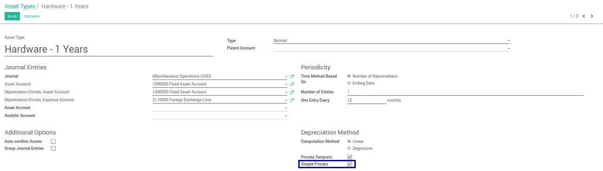

This module gives you the possibility to calculate depreciation with simple prorate. For example if you buy an asset in the middle of the month, and the depreciation will be calculated on the date when you buy the asset.
Our Features as Solution
Add Closing Date and Compute Depreciation with Simple Prorate
How To Do
1
Go to Accounting app, Configuration, Asset Types, and check Simple Prorata on Depreciation Method

2
We can see that the depreciation date is started from the date when we buy the asset.